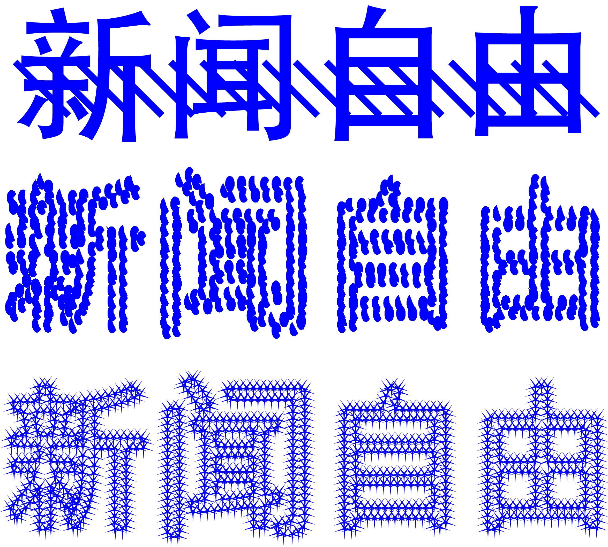

Disclaimer
The Following are tools to avoid surviellance, but to be clear these are only one persons expiriments. So I encourage you to expiriment and find what works for you, and of course using these processes in combination can only help obfuscate the content better!
General Rules
1. Raster is best
2. Do not have unobscured typography type can be (any combination):
a. stretched
b. skewed
c. scanned
d. covered with other shapes
e. made of many points rather than lines
3. Use CVdazzle for pictures of faces (can be added after picture s taken).
4. For human monitors use .gifs or video where the content doesn’t appear for a while.
Examples:
For this example use a different texture of brush to draw over the typography in the same color as the type.
This is a simple program to resample typographic vectors and place vector shapes along the lines, this is good for scaleable type and confuses programs by making them read individual vector shapes rather than the pattern.
—>Here is the program and the file to execute the action.<—
{kind=link}

This is a simple distortion to the type which can be achieved through scanning or photoshop emulating captchas. There are also generators that exist online
This idea is that if you send a .gif with the first 3/4 of the frames empty a human monitor will have less of a chance to catch the content.
There is as well word art that makes words out of other words ex:

These were generated with this website.